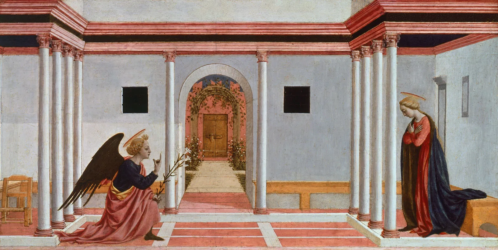

I am an organist and pianist. You can access some of my recordings on YouTube or Bilibili.
Here's a list of some of my performances:
Organ
- J. S. Bach: Prelude and Fugue in C minor, BWV 546
- Franck: Chorale No. 3 in A minor
- Felix Mendelssohn: Organ Sonata No. 3 in A major, Op. 65
- Robert Schumann: Studies in Canonic Form, Op. 56, Nos. 1, 3, 6